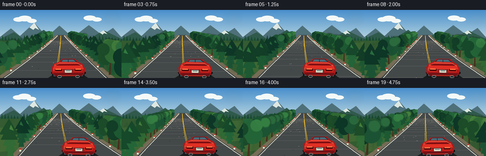
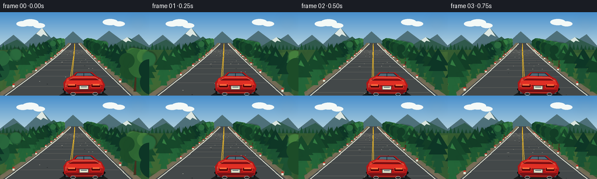
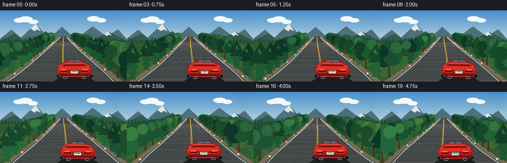

CODING AGENTS AS PIXEL WORLD MODELS
traex/GPT-5.6-Sol · instance_preservation_0029
点击播放 · 原生 RGB 像素
逐轮保存的候选
回放视频、检查图与代码变化。
每份候选均可单独播放。实际图片检查记录在下方工具轨迹中。
候选 01播放与检查图
点击播放 · 原生 RGB 像素


展开代码变化
--- 上一保存版本
+++ 本次保存版本
@@ -0,0 +1,232 @@
+from pathlib import Path
+import json, math
+import numpy as np
+from PIL import Image, ImageDraw, ImageFilter
+import artifact_io
+
+ROOT = Path(__file__).resolve().parent
+SPEC = json.loads((ROOT / 'task_spec.json').read_text())
+W, H, N = SPEC['width'], SPEC['height'], SPEC['frames']
+S = 3
+WW, HH = W*S, H*S
+HORIZON = 54.0
+rng = np.random.default_rng(29017)
+
+# Persistent world-space objects. Their IDs, sides, colors, and silhouettes do not change.
+trees = []
+for i in range(62):
+ trees.append({
+ 'z0': 1.15 + (i + rng.uniform(-.35, .35)) * 13.9 / 62,
+ 'side': -1 if i % 2 == 0 else 1,
+ 'jitter': rng.uniform(-.35, .55),
+ 'type': int(rng.integers(0, 3)),
+ 'tone': int(rng.integers(0, 4)),
+ 'lean': rng.uniform(-.12, .12),
+ })
+road_bits = []
+for i in range(65):
+ road_bits.append((1.2 + rng.random()*13.5, rng.uniform(-.82,.82), rng.uniform(.4,1.1)))
+
+
+def pts(seq): return [(int(round(x*S)), int(round(y*S))) for x,y in seq]
+def xy(box): return tuple(int(round(v*S)) for v in box)
+def road_bend(f):
+ q = f / (N-1)
+ return 21*math.sin(q*4.0 - .75) + 5*math.sin(q*7.1 + .6)
+def road_center(y, f):
+ u = max(0.0, min(1.15, (y-HORIZON)/(H-HORIZON)))
+ b = road_bend(f)
+ return W/2 + b*u**1.38 + 4.0*math.sin(f*.18)*u**2.5
+def road_half(y):
+ u = max(0, (y-HORIZON)/(H-HORIZON))
+ return 7.0 + 105.0*u**1.08
+
+def line_curve(draw, f, offset_frac, fill, width):
+ p=[]
+ for y in np.linspace(HORIZON, H+3, 70):
+ p.append((road_center(y,f)+offset_frac*road_half(y),y))
+ draw.line(pts(p), fill=fill, width=max(1,int(width*S)), joint='curve')
+
+def mountain_poly(draw, base_y, peaks, color):
+ poly=[(0,base_y)] + peaks + [(W,base_y),(W,HORIZON+18),(0,HORIZON+18)]
+ draw.polygon(pts(poly), fill=color)
+
+def project(z, side, jitter, f):
+ y = HORIZON + 151.0/z
+ c = road_center(y, f)
+ half = road_half(y)
+ x = c + side*(half + 4.5 + 15.0/z + jitter*10.0/z)
+ return x,y
+
+def tree_scale(z): return .24 + 2.25/z
+
+def draw_tree(layer, x, y, sc, typ, tone, lean=0.0, alpha=255, blurred=False):
+ d=ImageDraw.Draw(layer, 'RGBA')
+ trunk_w=max(1.2,3.0*sc); trunk_h=17*sc
+ tx=x+lean*10*sc
+ bark=(71,47,30,alpha)
+ d.polygon(pts([(tx-trunk_w/2,y),(tx+trunk_w/2,y),(x+trunk_w*.35,y-trunk_h),(x-trunk_w*.2,y-trunk_h)]),fill=bark)
+ palettes=[((22,72,42),(35,101,56),(52,126,66)),
+ ((18,61,38),(29,89,50),(44,113,60)),
+ ((28,76,40),(49,106,52),(69,128,61)),
+ ((13,54,38),(27,82,51),(42,106,61))]
+ dark,mid,light=palettes[tone]
+ if blurred:
+ dark=tuple(list(dark)+[alpha]); mid=tuple(list(mid)+[alpha])
+ else:
+ dark=tuple(list(dark)+[alpha]); mid=tuple(list(mid)+[alpha]); light=tuple(list(light)+[alpha])
+ if typ in (0,1): # mountain conifer: stacked, recognizable triangular crown
+ total=40*sc*(1.08 if typ==1 else 1.0)
+ for k,(yy,ww) in enumerate([(0.18,.35),(.34,.52),(.52,.70),(.70,.88),(.86,1.0)]):
+ cy=y-total*yy
+ hw=13*sc*ww
+ col=dark if k>=3 else mid
+ d.polygon(pts([(x+lean*(y-cy)-hw,cy+8*sc),(x+lean*(y-cy),cy-13*sc),(x+lean*(y-cy)+hw,cy+8*sc)]), fill=col)
+ if not blurred and sc>.45:
+ d.polygon(pts([(x-2*sc,y-total*.84),(x,y-total*.97),(x+4*sc,y-total*.79)]),fill=light)
+ else: # broad alpine roadside tree
+ centers=[(-7,-25,11), (5,-29,13), (-1,-39,11), (-10,-36,9), (10,-41,8)]
+ for k,(dx,dy,r) in enumerate(centers):
+ col=[dark,mid,mid,dark,light][k]
+ d.ellipse(xy((x+(dx-r)*sc,y+(dy-r)*sc,x+(dx+r)*sc,y+(dy+r)*sc)), fill=col)
+
+def make_car_sprite():
+ sw,sh=78,47
+ im=Image.new('RGBA',(sw*S,sh*S),(0,0,0,0)); d=ImageDraw.Draw(im,'RGBA')
+ # wheels behind body
+ d.rounded_rectangle(xy((5,25,16,42)),radius=4*S,fill=(18,20,23,255))
+ d.rounded_rectangle(xy((62,25,73,42)),radius=4*S,fill=(18,20,23,255))
+ d.rectangle(xy((8,34,14,40)),fill=(65,70,74,255)); d.rectangle(xy((64,34,70,40)),fill=(65,70,74,255))
+ # vivid red coupe body, fixed proportions in every frame
+ d.polygon(pts([(4,21),(10,13),(20,9),(26,3),(53,3),(61,10),(69,14),(75,25),(72,36),(63,40),(14,40),(5,34)]),fill=(176,24,24,255))
+ d.polygon(pts([(10,14),(21,10),(56,10),(68,16),(72,25),(7,25)]),fill=(224,47,36,255))
+ d.polygon(pts([(23,9),(28,4),(51,4),(58,10)]),fill=(31,48,59,255))
+ d.polygon(pts([(28,5),(50,5),(55,9),(25,9)]),fill=(80,111,124,230))
+ d.line(pts([(39,5),(39,10)]),fill=(20,35,43,255),width=1*S)
+ # spoiler and trunk definition
+ d.rounded_rectangle(xy((13,14,65,17)),radius=2*S,fill=(118,14,18,255))
+ d.rectangle(xy((17,12,61,14)),fill=(205,35,31,255))
+ d.line(pts([(9,26),(70,26)]),fill=(112,14,19,180),width=S)
+ # tail lights
+ d.rounded_rectangle(xy((10,23,27,30)),radius=2*S,fill=(79,6,9,255),outline=(245,62,44,255),width=S)
+ d.rounded_rectangle(xy((51,23,68,30)),radius=2*S,fill=(79,6,9,255),outline=(245,62,44,255),width=S)
+ d.rectangle(xy((12,24,24,26)),fill=(255,113,65,255)); d.rectangle(xy((54,24,66,26)),fill=(255,113,65,255))
+ # plate, bumper, exhaust
+ d.rounded_rectangle(xy((31,26,47,33)),radius=S,fill=(226,224,199,255),outline=(80,72,68,255),width=S)
+ d.rectangle(xy((34,28,44,29)),fill=(76,96,111,255))
+ d.polygon(pts([(7,33),(72,33),(66,40),(13,40)]),fill=(113,18,22,255))
+ d.line(pts([(17,38),(61,38)]),fill=(231,67,46,255),width=S)
+ d.ellipse(xy((16,38,25,43)),fill=(34,37,39,255),outline=(139,145,145,255),width=S)
+ d.ellipse(xy((54,38,63,43)),fill=(34,37,39,255),outline=(139,145,145,255),width=S)
+ # glossy highlights establish stable silhouette
+ d.line(pts([(10,18),(21,12),(58,12),(68,18)]),fill=(255,112,80,190),width=S)
+ d.line(pts([(8,22),(8,29)]),fill=(255,132,92,170),width=S)
+ return im
+CAR=make_car_sprite()
+
+def render(f):
+ # Sky gradient
+ arr=np.zeros((HH,WW,3),dtype=np.uint8)
+ top=np.array([72,143,204.]); bot=np.array([203,225,227.])
+ for yy in range(HH):
+ a=min(1, yy/(HORIZON*S*1.35)); arr[yy,:,:]=(top*(1-a)+bot*a).astype(np.uint8)
+ img=Image.fromarray(arr,'RGB').convert('RGBA'); d=ImageDraw.Draw(img,'RGBA')
+ # distant clouds, nearly fixed to preserve geography
+ cloud_shift=-f*.10
+ for cx,cy,r in [(39,20,11),(52,18,14),(67,23,10),(189,17,13),(204,20,10)]:
+ d.ellipse(xy((cx-r+cloud_shift,cy-r*.42,cx+r+cloud_shift,cy+r*.42)),fill=(244,249,247,118))
+ # layered mountain pass
+ mountain_poly(d,67,[(0,57),(23,39),(42,55),(72,27),(99,57),(125,33),(153,58),(187,32),(215,53),(238,38),(256,58)],(78,112,121,255))
+ mountain_poly(d,70,[(0,61),(29,47),(55,65),(92,42),(120,64),(155,48),(180,66),(218,43),(256,61)],(48,90,76,255))
+ # distant snow accents
+ d.polygon(pts([(62,37),(72,27),(82,42),(74,38),(70,42)]),fill=(221,231,226,205))
+ d.polygon(pts([(210,48),(218,43),(226,51),(219,49),(216,52)]),fill=(218,230,223,160))
+ # distant forest teeth along horizon
+ for i in range(42):
+ x=i*6.6-8-(f*.10)%6.6; hh=7+(i*7%8)
+ col=(25,69+(i%3)*5,48,255)
+ d.polygon(pts([(x-3,67),(x,67-hh),(x+3,67)]),fill=col)
+ # valley/ground
+ d.rectangle(xy((0,65,W,H)),fill=(52,91,49,255))
+ # shadowed and sunlit bands in verge
+ d.polygon(pts([(0,84),(W,68),(W,111),(0,135)]),fill=(65,104,52,255))
+ # road shoulder and asphalt sampled along the actual winding center
+ ys=np.linspace(HORIZON-1,H+4,70)
+ left=[(road_center(y,f)-road_half(y)-5-9*max(0,(y-HORIZON)/(H-HORIZON))**1.2,y) for y in ys]
+ right=[(road_center(y,f)+road_half(y)+5+9*max(0,(y-HORIZON)/(H-HORIZON))**1.2,y) for y in ys]
+ d.polygon(pts(left+right[::-1]),fill=(119,109,87,255))
+ left2=[(road_center(y,f)-road_half(y),y) for y in ys]
+ right2=[(road_center(y,f)+road_half(y),y) for y in ys]
+ d.polygon(pts(left2+right2[::-1]),fill=(67,72,73,255))
+ # broad subtle asphalt bands accentuate forward flow
+ for z0 in np.linspace(1.4,13.5,20):
+ z=1+((z0-f*.44-1)%13)
+ y=HORIZON+151/z
+ if HORIZON<y<H+3:
+ u=(y-HORIZON)/(H-HORIZON); c=road_center(y,f); hw=road_half(y)*.93
+ d.line(pts([(c-hw,y),(c+hw,y)]),fill=(85,88,86,35),width=max(S,int((.25+u*1.2)*S)))
+ # edge lines and double center lines follow every turn
+ line_curve(d,f,-.96,(226,228,211,255),1.5); line_curve(d,f,.96,(226,228,211,255),1.5)
+ line_curve(d,f,-.018,(237,184,39,255),1.25); line_curve(d,f,.018,(237,184,39,255),1.25)
+ # road aggregate / reflectors, persistent and projected
+ for z0,lat,size in road_bits:
+ z=1+((z0-f*.44-1)%13)
+ y=HORIZON+151/z
+ if HORIZON<y<H+2:
+ x=road_center(y,f)+lat*road_half(y)
+ rr=size*(.22+1.7/z)
+ color=(151,151,142,125) if int(z0*10)%3 else (42,45,46,105)
+ d.ellipse(xy((x-rr,y-rr*.35,x+rr,y+rr*.35)),fill=color)
+ # depth-sorted trees. Motion trail uses prior projection (toward vanishing point).
+ visible=[]
+ for tr in trees:
+ z=1+((tr['z0']-f*.44-1)%13)
+ y=HORIZON+151/z
+ if HORIZON-2<y<H+35: visible.append((z,tr))
+ visible.sort(reverse=True,key=lambda a:a[0])
+ for z,tr in visible:
+ x,y=project(z,tr['side'],tr['jitter'],f); sc=tree_scale(z)
+ # soft directional echo gives fast radial motion without changing tree identity
+ if z<5.5:
+ blur=Image.new('RGBA',(WW,HH),(0,0,0,0))
+ for q,aa in [(.30,38),(.62,25),(.88,15)]:
+ zp=z+.44*q
+ xp,yp=project(zp,tr['side'],tr['jitter'],max(0,f-1))
+ draw_tree(blur,xp,yp,tree_scale(zp),tr['type'],tr['tone'],tr['lean'],aa,True)
+ blur=blur.filter(ImageFilter.GaussianBlur(max(1,S*1.15)))
+ img=Image.alpha_composite(img,blur)
+ sharp=Image.new('RGBA',(WW,HH),(0,0,0,0))
+ draw_tree(sharp,x,y,sc,tr['type'],tr['tone'],tr['lean'],255,False)
+ img=Image.alpha_composite(img,sharp)
+ d=ImageDraw.Draw(img,'RGBA')
+ # roadside delineators that visibly rush past
+ d=ImageDraw.Draw(img,'RGBA')
+ for side in (-1,1):
+ for j in range(11):
+ z=1+(((2+j*1.18+(.25 if side>0 else 0))-f*.44-1)%13)
+ y=HORIZON+151/z
+ if HORIZON<y<H+5:
+ x=road_center(y,f)+side*(road_half(y)+2)
+ ht=1.5+9/z; wd=.7+2/z
+ d.rectangle(xy((x-wd,y-ht,x+wd,y)),fill=(224,225,207,255))
+ d.rectangle(xy((x-wd,y-ht,x+wd,y-ht*.62)),fill=(190,49,34,255))
+ # car remains one fixed, recognizable instance; camera follows its lane.
+ car_y=100.0 + .7*math.sin(f*.74)
+ road_y=126
+ car_x=road_center(road_y,f)+road_half(road_y)*.27
+ # contact shadow and faint speed wake
+ d.ellipse(xy((car_x-36,126,car_x+37,140)),fill=(8,13,12,125))
+ d.polygon(pts([(car_x-24,132),(car_x+25,132),(car_x+42,144),(car_x-43,144)]),fill=(26,30,29,42))
+ angle=-.65*math.sin(f*.25)-road_bend(f)*.018
+ sprite=CAR.rotate(angle,resample=Image.Resampling.BICUBIC,expand=True)
+ px=int((car_x-sprite.width/(2*S))*S); py=int(car_y*S)
+ img.alpha_composite(sprite,(px,py))
+ # mild sun flare/highlight
+ gl=Image.new('RGBA',(WW,HH),(0,0,0,0)); gd=ImageDraw.Draw(gl,'RGBA')
+ gd.ellipse(xy((226,8,246,28)),fill=(255,243,183,22))
+ img=Image.alpha_composite(img,gl.filter(ImageFilter.GaussianBlur(8*S)))
+ return np.array(img.convert('RGB').resize((W,H),Image.Resampling.LANCZOS),dtype=np.uint8)
+
+frames=np.stack([render(f) for f in range(N)],axis=0)
+artifact_io.save(frames,ROOT)
+print('saved',frames.shape,frames.dtype,'mean',float(frames.mean()))
候选 02播放与检查图
点击播放 · 原生 RGB 像素

展开代码变化
--- 上一保存版本
+++ 本次保存版本
@@ -36,7 +36,9 @@
def road_center(y, f):
u = max(0.0, min(1.15, (y-HORIZON)/(H-HORIZON)))
b = road_bend(f)
- return W/2 + b*u**1.38 + 4.0*math.sin(f*.18)*u**2.5
+ # The second, depth-dependent component makes the pass visibly S-shaped
+ # instead of merely translating a straight road sideways.
+ return W/2 + b*u**1.38 + 11.0*math.sin(f*.20 + u*2.65)*u**1.65
def road_half(y):
u = max(0, (y-HORIZON)/(H-HORIZON))
return 7.0 + 105.0*u**1.08
@@ -160,7 +162,7 @@
d.polygon(pts(left2+right2[::-1]),fill=(67,72,73,255))
# broad subtle asphalt bands accentuate forward flow
for z0 in np.linspace(1.4,13.5,20):
- z=1+((z0-f*.44-1)%13)
+ z=1+((z0-f*.52-1)%13)
y=HORIZON+151/z
if HORIZON<y<H+3:
u=(y-HORIZON)/(H-HORIZON); c=road_center(y,f); hw=road_half(y)*.93
@@ -180,7 +182,7 @@
# depth-sorted trees. Motion trail uses prior projection (toward vanishing point).
visible=[]
for tr in trees:
- z=1+((tr['z0']-f*.44-1)%13)
+ z=1+((tr['z0']-f*.52-1)%13)
y=HORIZON+151/z
if HORIZON-2<y<H+35: visible.append((z,tr))
visible.sort(reverse=True,key=lambda a:a[0])
@@ -190,7 +192,7 @@
if z<5.5:
blur=Image.new('RGBA',(WW,HH),(0,0,0,0))
for q,aa in [(.30,38),(.62,25),(.88,15)]:
- zp=z+.44*q
+ zp=z+.52*q
xp,yp=project(zp,tr['side'],tr['jitter'],max(0,f-1))
draw_tree(blur,xp,yp,tree_scale(zp),tr['type'],tr['tone'],tr['lean'],aa,True)
blur=blur.filter(ImageFilter.GaussianBlur(max(1,S*1.15)))
@@ -203,7 +205,7 @@
d=ImageDraw.Draw(img,'RGBA')
for side in (-1,1):
for j in range(11):
- z=1+(((2+j*1.18+(.25 if side>0 else 0))-f*.44-1)%13)
+ z=1+(((2+j*1.18+(.25 if side>0 else 0))-f*.52-1)%13)
y=HORIZON+151/z
if HORIZON<y<H+5:
x=road_center(y,f)+side*(road_half(y)+2)
@@ -211,7 +213,7 @@
d.rectangle(xy((x-wd,y-ht,x+wd,y)),fill=(224,225,207,255))
d.rectangle(xy((x-wd,y-ht,x+wd,y-ht*.62)),fill=(190,49,34,255))
# car remains one fixed, recognizable instance; camera follows its lane.
- car_y=100.0 + .7*math.sin(f*.74)
+ car_y=95.0 + .6*math.sin(f*.74)
road_y=126
car_x=road_center(road_y,f)+road_half(road_y)*.27
# contact shadow and faint speed wake
候选 03播放与检查图

可观测工具轨迹
实际执行的命令与返回图片。
命令 1exit 0
/bin/bash -lc "cat prompt.txt && printf '\\n--- GENERATION_RULES.md ---\\n' && cat GENERATION_RULES.md"
命令 2exit 0
/bin/bash -lc "cat task_spec.json && printf '\\n--- FILES ---\\n' && find . -maxdepth 2 -type f -printf '%p\\n' | sort"
命令 3exit 0
/bin/bash -lc 'cat artifact_io.py'
命令 4exit 1
/bin/bash -lc "cat > generate.py <<'PY'
from pathlib import Path
import json, math
import numpy as np
from PIL import Image, ImageDraw, ImageFilter
import artifact_io
ROOT = Path(__file__).resolve().parent
SPEC = json.loads((ROOT / 'task_spec.json').read_text())
W, H, N = SPEC['width'], SPEC['height'], SPEC['frames']
S = 3
WW, HH = W*S, H*S
HORIZON = 54.0
rng = np.random.default_rng(29017)
# Persistent world-space objects. Their IDs, sides, colors, and silhouettes do not change.
trees = []
for i in range(62):
trees.append({
'z0': 1.15 + (i + rng.uniform(-.35, .35)) * 13.9 / 62,
'side': -1 if i % 2 == 0 else 1,
'jitter': rng.uniform(-.35, .55),
'type': int(rng.integers(0, 3)),
'tone': int(rng.integers(0, 4)),
'lean': rng.uniform(-.12, .12),
})
road_bits = []
for i in range(65):
road_bits.append((1.2 + rng.random()*13.5, rng.uniform(-.82,.82), rng.uniform(.4,1.1)))
def pts(seq): return [(int(round(x*S)), int(round(y*S))) for x,y in seq]
def xy(box): return tuple(int(round(v*S)) for v in box)
def road_bend(f):
q = f / (N-1)
return 21*math.sin(q*4.0 - .75) + 5*math.sin(q*7.1 + .6)
def road_center(y, f):
u = max(0.0, min(1.15, (y-HORIZON)/(H-HORIZON)))
b = road_bend(f)
return W/2 + b*u**1.38 + 4.0*math.sin(f*.18)*u**2.5
def road_half(y):
u = max(0, (y-HORIZON)/(H-HORIZON))
return 7.0 + 105.0*u**1.08
def line_curve(draw, f, offset_frac, fill, width):
p=[]
for y in np.linspace(HORIZON, H+3, 70):
p.append((road_center(y,f)+offset_frac*road_half(y),y))
draw.line(pts(p), fill=fill, width=max(1,int(width*S)), joint='curve')
def mountain_poly(draw, base_y, peaks, color):
poly=[(0,base_y)] + peaks + [(W,base_y),(W,HORIZON+18),(0,HORIZON+18)]
draw.polygon(pts(poly), fill=color)
def project(z, side, jitter, f):
y = HORIZON + 151.0/z
c = road_center(y, f)
half = road_half(y)
x = c + side*(half + 4.5 + 15.0/z + jitter*10.0/z)
return x,y
def tree_scale(z): return .24 + 2.25/z
def draw_tree(layer, x, y, sc, typ, tone, lean=0.0, alpha=255, blurred=False):
d=ImageDraw.Draw(layer, 'RGBA')
trunk_w=max(1.2,3.0*sc); trunk_h=17*sc
tx=x+lean*10*sc
bark=(71,47,30,alpha)
d.polygon(pts([(tx-trunk_w/2,y),(tx+trunk_w/2,y),(x+trunk_w*.35,y-trunk_h),(x-trunk_w*.2,y-trunk_h)]),fill=bark)
palettes=[((22,72,42),(35,101,56),(52,126,66)),
((18,61,38),(29,89,50),(44,113,60)),
((28,76,40),(49,106,52),(69,128,61)),
((13,54,38),(27,82,51),(42,106,61))]
dark,mid,light=palettes[tone]
if blurred:
dark=tuple(list(dark)+[alpha]); mid=tuple(list(mid)+[alpha])
else:
dark=tuple(list(dark)+[alpha]); mid=tuple(list(mid)+[alpha]); light=tuple(list(light)+[alpha])
if typ in (0,1): # mountain conifer: stacked, recognizable triangular crown
total=40*sc*(1.08 if typ==1 else 1.0)
for k,(yy,ww) in enumerate([(0.18,.35),(.34,.52),(.52,.70),(.70,.88),(.86,1.0)]):
cy=y-total*yy
hw=13*sc*ww
col=dark if k>=3 else mid
d.polygon(pts([(x+lean*(y-cy)-hw,cy+8*sc),(x+lean*(y-cy),cy-13*sc),(x+lean*(y-cy)+hw,cy+8*sc)]), fill=col)
if not blurred and sc>.45:
d.polygon(pts([(x-2*sc,y-total*.84),(x,y-total*.97),(x+4*sc,y-total*.79)]),fill=light)
else: # broad alpine roadside tree
centers=[(-7,-25,11), (5,-29,13), (-1,-39,11), (-10,-36,9), (10,-41,8)]
for k,(dx,dy,r) in enumerate(centers):
col=[dark,mid,mid,dark,light][k]
d.ellipse(xy((x+(dx-r)*sc,y+(dy-r)*sc,x+(dx+r)*sc,y+(dy+r)*sc)), fill=col)
def make_car_sprite():
sw,sh=78,47
im=Image.new('RGBA',(sw*S,sh*S),(0,0,0,0)); d=ImageDraw.Draw(im,'RGBA')
# wheels behind body
d.rounded_rectangle(xy((5,25,16,42)),radius=4*S,fill=(18,20,23,255))
d.rounded_rectangle(xy((62,25,73,42)),radius=4*S,fill=(18,20,23,255))
d.rectangle(xy((8,34,14,40)),fill=(65,70,74,255)); d.rectangle(xy((64,34,70,40)),fill=(65,70,74,255))
# vivid red coupe body, fixed proportions in every frame
d.polygon(pts([(4,21),(10,13),(20,9),(26,3),(53,3),(61,10),(69,14),(75,25),(72,36),(63,40),(14,40),(5,34)]),fill=(176,24,24,255))
d.polygon(pts([(10,14),(21,10),(56,10),(68,16),(72,25),(7,25)]),fill=(224,47,36,255))
d.polygon(pts([(23,9),(28,4),(51,4),(58,10)]),fill=(31,48,59,255))
d.polygon(pts([(28,5),(50,5),(55,9),(25,9)]),fill=(80,111,124,230))
d.line(pts([(39,5),(39,10)]),fill=(20,35,43,255),width=1*S)
# spoiler and trunk definition
d.rounded_rectangle(xy((13,14,65,17)),radius=2*S,fill=(118,14,18,255))
d.rectangle(xy((17,12,61,14)),fill=(205,35,31,255))
d.line(pts([(9,26),(70,26)]),fill=(112,14,19,180),width=S)
# tail lights
d.rounded_rectangle(xy((10,23,27,30)),radius=2*S,fill=(79,6,9,255),outline=(245,62,44,255),width=S)
d.rounded_rectangle(xy((51,23,68,30)),radius=2*S,fill=(79,6,9,255),outline=(245,62,44,255),width=S)
d.rectangle(xy((12,24,24,26)),fill=(255,113,65,255)); d.rectangle(xy((54,24,66,26)),fill=(255,113,65,255))
# plate, bumper, exhaust
d.rounded_rectangle(xy((31,26,47,33)),radius=S,fill=(226,224,199,255),outline=(80,72,68,255),width=S)
d.rectangle(xy((34,28,44,29)),fill=(76,96,111,255))
d.polygon(pts([(7,33),(72,33),(66,40),(13,40)]),fill=(113,18,22,255))
d.line(pts([(17,38),(61,38)]),fill=(231,67,46,255),width=S)
d.ellipse(xy((16,38,25,43)),fill=(34,37,39,255),outline=(139,145,145,255),width=S)
d.ellipse(xy((54,38,63,43)),fill=(34,37,39,255),outline=(139,145,145,255),width=S)
# glossy highlights establish stable silhouette
d.line(pts([(10,18),(21,12),(58,12),(68,18)]),fill=(255,112,80,190),width=S)
d.line(pts([(8,22),(8,29)]),fill=(255,132,92,170),width=S)
return im
CAR=make_car_sprite()
def render(f):
# Sky gradient
arr=np.zeros((HH,WW,3),dtype=np.uint8)
top=np.array([72,143,204.]); bot=np.array([203,225,227.])
for yy in range(HH):
a=min(1, yy/(HORIZON*S*1.35)); arr[yy,:,:]=(top*(1-a)+bot*a).astype(np.uint8)
img=Image.fromarray(arr,'RGB').convert('RGBA'); d=ImageDraw.Draw(img,'RGBA')
# distant clouds, nearly fixed to preserve geography
cloud_shift=-f*.10
for cx,cy,r in [(39,20,11),(52,18,14),(67,23,10),(189,17,13),(204,20,10)]:
d.ellipse(xy((cx-r+cloud_shift,cy-r*.42,cx+r+cloud_shift,cy+r*.42)),fill=(244,249,247,118))
# layered mountain pass
mountain_poly(d,67,[(0,57),(23,39),(42,55),(72,27),(99,57),(125,33),(153,58),(187,32),(215,53),(238,38),(256,58)],(78,112,121,255))
mountain_poly(d,70,[(0,61),(29,47),(55,65),(92,42),(120,64),(155,48),(180,66),(218,43),(256,61)],(48,90,76,255))
# distant snow accents
d.polygon(pts([(62,37),(72,27),(82,42),(74,38),(70,42)]),fill=(221,231,226,205))
d.polygon(pts([(210,48),(218,43),(226,51),(219,49),(216,52)]),fill=(218,230,223,160))
# distant forest teeth along horizon
for i in range(42):
x=i*6.6-8-(f*.10)%6.6; hh=7+(i*7%8)
col=(25,69+(i%3)*5,48,255)
d.polygon(pts([(x-3,67),(x,67-hh),(x+3,67)]),fill=col)
# valley/ground
d.rectangle(xy((0,65,W,H)),fill=(52,91,49,255))
# shadowed and sunlit bands in verge
d.polygon(pts([(0,84),(W,68),(W,111),(0,135)]),fill=(65,104,52,255))
# road shoulder and asphalt sampled along the actual winding center
ys=np.linspace(HORIZON-1,H+4,70)
left=[(road_center(y,f)-road_half(y)-5-9*((y-HORIZON)/(H-HORIZON))**1.2,y) for y in ys]
right=[(road_center(y,f)+road_half(y)+5+9*((y-HORIZON)/(H-HORIZON))**1.2,y) for y in ys]
d.polygon(pts(left+right[::-1]),fill=(119,109,87,255))
left2=[(road_center(y,f)-road_half(y),y) for y in ys]
right2=[(road_center(y,f)+road_half(y),y) for y in ys]
d.polygon(pts(left2+right2[::-1]),fill=(67,72,73,255))
# broad subtle asphalt bands accentuate forward flow
for z0 in np.linspace(1.4,13.5,20):
z=1+((z0-f*.44-1)%13)
y=HORIZON+151/z
if HORIZON<y<H+3:
u=(y-HORIZON)/(H-HORIZON); c=road_center(y,f); hw=road_half(y)*.93
d.line(pts([(c-hw,y),(c+hw,y)]),fill=(85,88,86,35),width=max(S,int((.25+u*1.2)*S)))
# edge lines and double center lines follow every turn
line_curve(d,f,-.96,(226,228,211,255),1.5); line_curve(d,f,.96,(226,228,211,255),1.5)
line_curve(d,f,-.018,(237,184,39,255),1.25); line_curve(d,f,.018,(237,184,39,255),1.25)
# road aggregate / reflectors, persistent and projected
for z0,lat,size in road_bits:
z=1+((z0-f*.44-1)%13)
y=HORIZON+151/z
if HORIZON<y<H+2:
x=road_center(y,f)+lat*road_half(y)
rr=size*(.22+1.7/z)
color=(151,151,142,125) if int(z0*10)%3 else (42,45,46,105)
d.ellipse(xy((x-rr,y-rr*.35,x+rr,y+rr*.35)),fill=color)
# depth-sorted trees. Motion trail uses prior projection (toward vanishing point).
visible=[]
for tr in trees:
z=1+((tr['z0']-f*.44-1)%13)
y=HORIZON+151/z
if HORIZON-2<y<H+35: visible.append((z,tr))
visible.sort(reverse=True,key=lambda a:a[0])
for z,tr in visible:
x,y=project(z,tr['side'],tr['jitter'],f); sc=tree_scale(z)
# soft directional echo gives fast radial motion without changing tree identity
if z<5.5:
blur=Image.new('RGBA',(WW,HH),(0,0,0,0))
for q,aa in [(.30,38),(.62,25),(.88,15)]:
zp=z+.44*q
xp,yp=project(zp,tr['side'],tr['jitter'],max(0,f-1))
draw_tree(blur,xp,yp,tree_scale(zp),tr['type'],tr['tone'],tr['lean'],aa,True)
blur=blur.filter(ImageFilter.GaussianBlur(max(1,S*1.15)))
img=Image.alpha_composite(img,blur)
sharp=Image.new('RGBA',(WW,HH),(0,0,0,0))
draw_tree(sharp,x,y,sc,tr['type'],tr['tone'],tr['lean'],255,False)
img=Image.alpha_composite(img,sharp)
d=ImageDraw.Draw(img,'RGBA')
# roadside delineators that visibly rush past
d=ImageDraw.Draw(img,'RGBA')
for side in (-1,1):
for j in range(11):
z=1+(((2+j*1.18+(.25 if side>0 else 0))-f*.44-1)%13)
y=HORIZON+151/z
if HORIZON<y<H+5:
x=road_center(y,f)+side*(road_half(y)+2)
ht=1.5+9/z; wd=.7+2/z
d.rectangle(xy((x-wd,y-ht,x+wd,y)),fill=(224,225,207,255))
d.rectangle(xy((x-wd,y-ht,x+wd,y-ht*.62)),fill=(190,49,34,255))
# car remains one fixed, recognizable instance; camera follows its lane.
car_y=100.0 + .7*math.sin(f*.74)
road_y=126
car_x=road_center(road_y,f)+road_half(road_y)*.27
# contact shadow and faint speed wake
d.ellipse(xy((car_x-36,126,car_x+37,140)),fill=(8,13,12,125))
d.polygon(pts([(car_x-24,132),(car_x+25,132),(car_x+42,144),(car_x-43,144)]),fill=(26,30,29,42))
angle=-.65*math.sin(f*.25)-road_bend(f)*.018
sprite=CAR.rotate(angle,resample=Image.Resampling.BICUBIC,expand=True)
px=int((car_x-sprite.width/(2*S))*S); py=int(car_y*S)
img.alpha_composite(sprite,(px,py))
# mild sun flare/highlight
gl=Image.new('RGBA',(WW,HH),(0,0,0,0)); gd=ImageDraw.Draw(gl,'RGBA')
gd.ellipse(xy((226,8,246,28)),fill=(255,243,183,22))
img=Image.alpha_composite(img,gl.filter(ImageFilter.GaussianBlur(8*S)))
return np.array(img.convert('RGB').resize((W,H),Image.Resampling.LANCZOS),dtype=np.uint8)
frames=np.stack([render(f) for f in range(N)],axis=0)
artifact_io.save(frames,ROOT)
print('saved',frames.shape,frames.dtype,'mean',float(frames.mean()))
PY
python generate.py"命令 5exit 0
/bin/bash -lc "python generate.py && python - <<'PY'
from PIL import Image
import numpy as np, json
p=np.load('pixels.npz')['pixels']
s=json.load(open('task_spec.json'))
print('pixels',p.shape,p.dtype,'files',len(list(__import__('pathlib').Path('frames').glob('*.png'))))
print('packed_rgb_minmax',int(p.min()),int(p.max()),'html',__import__('pathlib').Path('index.html').stat().st_size)
PY"命令 6exit 0
/bin/bash -lc "python generate.py && python - <<'PY'
from pathlib import Path
import json, numpy as np
from PIL import Image
s=json.loads(Path('task_spec.json').read_text())
files=sorted(Path('frames').glob('*.png'))
assert len(files)==s['frames']
for f in files:
a=np.asarray(Image.open(f))
assert a.shape==(s['height'],s['width'],3) and a.dtype==np.uint8
z=np.load('pixels.npz')['pixels']
assert z.shape==(s['height'],s['width'],s['frames']) and z.dtype==np.uint32
for req in ['pixels.npz','inspection.png','transition_check.png','index.html','generate.py']:
assert Path(req).is_file() and Path(req).stat().st_size>0
print('VALIDATED',len(files),'RGB frames',f\"{s['width']}x{s['height']}\",s['fps'],'fps',f\"duration={s['frames']/s['fps']:.1f}s\")
print('artifact sizes', {p:Path(p).stat().st_size for p in ['pixels.npz','inspection.png','transition_check.png','index.html']})
PY"视觉工具实际返回图片 1

视觉工具实际返回图片 2

视觉工具实际返回图片 3

保存候选 3 份；完成命令 6 次；可验证图片返回 3 张。原始 API 响应与完整日志保留在本地。